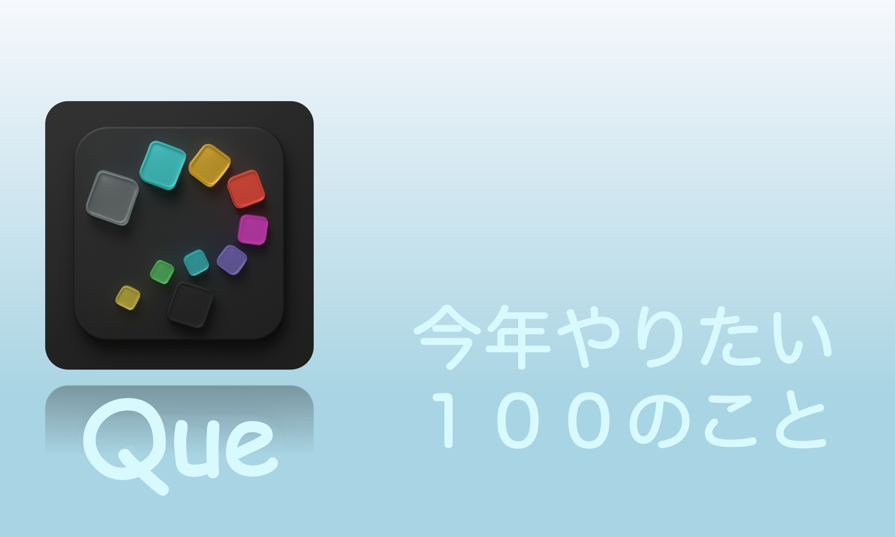
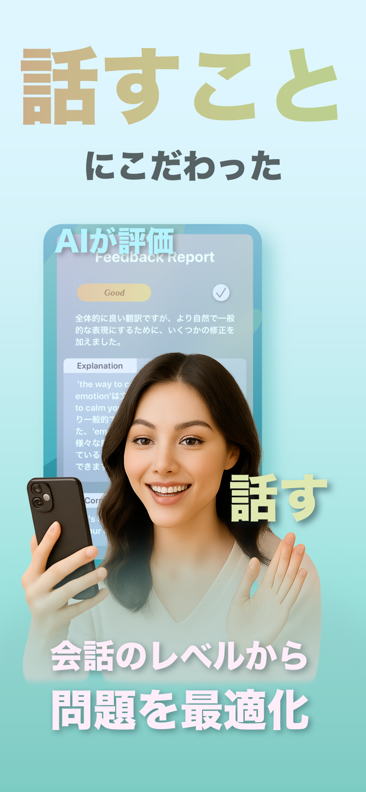
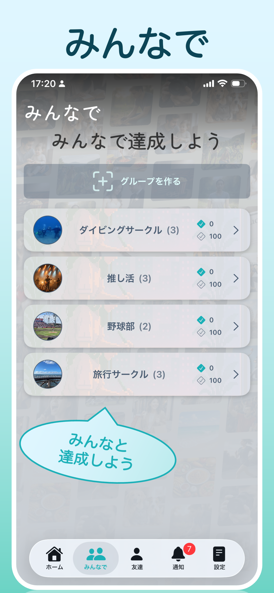
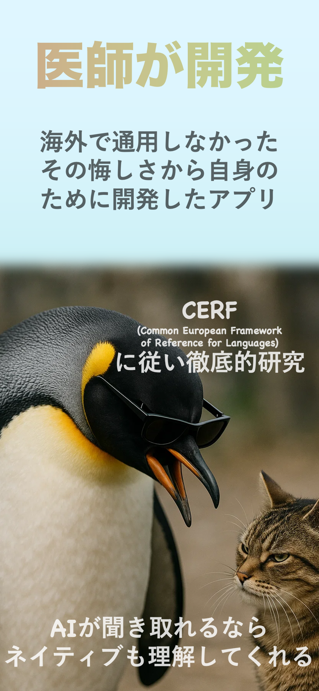

最大100個を、自分のペースで
年ごとにやりたいことを管理。最初から100個そろえる必要はありません。達成したこと、これから取り組むこと、達成数を確認できます。
100 THINGS TO DO THIS YEAR
あなたの「やりたい」が、
今年の思い出になる。
行ってみたい場所、挑戦したいこと、大切な人と過ごしたい時間。Que（キュー）は、今年やりたい100のことを集めるウィッシュリストアプリです。ひとりでも、カップルでも、友達とでも。叶えたことは写真とひとことで残せます。

WHAT IS QUE?
Que（キュー）は、1年ごとに最大100個のやりたいことをリストにし、共有・達成・思い出の記録まで楽しめるiPhoneアプリです。
自分の目標を管理しながら、友達と応援し合ったり、カップルやグループで共通のリストに取り組んだりできます。個人の項目は「自分のみ」「友達」から公開範囲を選べます。まだ目標が決まっていない人も、サンプルやAIとの会話からアイデアを見つけられます。
FEATURES
年ごとにやりたいことを管理。最初から100個そろえる必要はありません。達成したこと、これから取り組むこと、達成数を確認できます。
取り組みたい日や優先度を決め、準備することをメモに。検索や並べ替えで項目を見つけて、次の行動につなげられます。
個人の項目は「自分のみ」「友達」を選択。友達への共有と、カップルや仲間で使うグループの共通リストに対応し、コメントやいいねを送れます。
ひとつの達成に、最大4枚の写真と短いひとことを添えられます。旅行の景色や挑戦を終えた日の気持ちを残して、1年の思い出を振り返れます。
AIとの会話やサンプルから、やってみたいことを探せます。気になる提案をリストに追加できます。AI機能には利用枠があり、追加利用分をアプリ内で購入できます。
今年のリストから選んだ項目を翌年へコピーできます。未達成の目標や、もう一度挑戦したいことを次の1年へ。リストを画像にして共有することもできます。
WHO IS QUE FOR?
新年の抱負から、次の休日の楽しみまで。自分が叶えたいことや、一緒に過ごしたい相手に合わせて使えます。
ひとりで
読書、勉強、資格、運動など、今年取り組みたいことをひとつのリストに。予定日や優先度を付けて、自分のペースで進められます。
例：本を1冊読む、新しい料理を作る
カップルで
ふたりで行きたい場所や体験したいことをグループのリストに。達成したら写真とひとことを添えて、共通の思い出として振り返れます。
例：温泉旅行に行く、美術館を訪れる
友達・グループで
それぞれの目標を友達に共有したり、共通のリストを作ったり。コメントやいいねで応援し合いながら、次のお出かけや挑戦を考えられます。
例：キャンプをする、初めての体験に挑戦する
まだ決まっていなくても
目標がはっきりしていなくても大丈夫。サンプルを見たり、AIに希望を伝えたりして、気になったアイデアから少しずつリストに追加できます。
例：気になるカフェに行く、新しい趣味を探す
GET STARTED
小さな楽しみをひとつ登録。思いつかないときはサンプルやAIの提案をきっかけにできます。
予定日・優先度・メモで具体化。個人の項目は公開範囲を選び、共通の目標にはグループのリストを使えます。
達成したことを写真とひとことで記録。年末に振り返ったり、続けたい目標を翌年へコピーしたりできます。
WISH LIST IDEAS
大きな挑戦だけでなく、日常の小さな楽しみも。こんなアイデアを、自分のリストのきっかけに。
APP PREVIEW



FAQ
Queは、1年ごとに最大100個のやりたいことをリストにし、共有・達成・思い出の記録まで楽しめるiPhone向けウィッシュリストアプリです。個人の目標管理にも、カップルや友達との共通のリストにも使えます。
今年の目標を整理したい人、デートや旅行の案を共有したいカップル、友達と新しい体験に挑戦したい人、達成を写真で振り返りたい人に向いています。やりたいことがまだ決まっていない人も、サンプルやAIの提案から始められます。
はい。友達への共有やグループを利用せず、自分のやりたいことを管理できます。個人の項目は「自分のみ」に設定できます。
いいえ。ひとつから始めて、あとから少しずつ増やせます。1年ごとに最大100個登録でき、カフェに行く、本を1冊読むといった小さな楽しみもリストにできます。
いいえ。個人のやりたいことは、項目ごとに「自分のみ」「友達」の公開範囲を選べます。自分だけにしておきたい目標と、友達に共有して応援してほしい挑戦を分けられます。
友達への共有では、自分のやりたいことや達成状況を友達に見せられます。グループのリストでは、カップルや仲間で共通のやりたいことを管理できます。個人の目標と、みんなで叶えたい目標をそれぞれまとめられます。
グループのリストに、ふたりで行きたい場所やデート、旅行のアイデアをまとめられます。達成したことには写真とひとことを添えて、ふたりの思い出を振り返れます。
はい。やりたいことに予定日・優先度・メモを設定できます。取り組む時期や準備することを整理し、検索や並べ替えで登録した項目を見つけられます。
ひとつの達成につき、最大4枚の写真と短いひとことを添えられます。叶えたことを、その日の景色や気持ちと一緒に振り返れます。
はい。共有したやりたいことにコメントやいいねを送れます。挑戦の途中も、達成したときも、お互いを応援できます。
AIとの会話で希望を伝えながら、やりたいことのアイデアを探せます。気になる提案を自分のリストに追加できます。サンプルから探したり、自分で入力したりする方法も組み合わせられます。
Queは無料でダウンロードでき、アプリ内課金があります。AI機能には利用枠があり、追加利用分をアプリ内で購入できます。購入内容と価格は、アプリ内の購入画面で確認してください。
はい。今年のリストから項目を選び、翌年のリストへコピーできます。未達成の目標や、来年も続けたい挑戦を次の1年につなげられます。
はい。やりたいことのリストを画像にして共有できます。友達への共有やグループのリストに加えて、リストを画像として見せる使い方もできます。
QueはiPhone向けのアプリです。対応するOSのバージョンなど、最新の動作条件はApp Storeの互換性欄で確認できます。